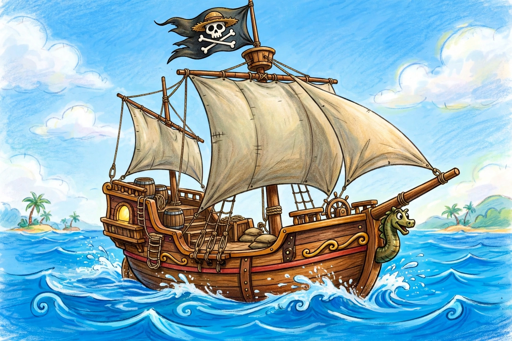

One Piece
| One Piece | |
| Genre | Adventure, fantasy |
|---|---|
| Author | Eiichiro Oda |
| Published by | Shueisha |
| Magazine | Weekly Shōnen Jump |
| Original run | July 22, 1997 – present |
| Volumes | 110+ (as of mid-2020s) |

One Piece (stylized in all caps) is a Japanese manga series written and illustrated by Eiichiro Oda. It has been serialized in Shueisha's Weekly Shōnen Jump magazine since July 1997, with its chapters compiled into over 110 tankōbon volumes. The story follows Monkey D. Luffy and his crew, the Straw Hat Pirates, as they explore the Grand Line in search of the mythical treasure known as the "One Piece" to become the next King of the Pirates.
Plot
Luffy, whose body gained the properties of rubber after eating a Devil Fruit, gathers a crew — including swordsman Roronoa Zoro, navigator Nami, sniper Usopp, cook Sanji, doctor Tony Tony Chopper, archaeologist Nico Robin, shipwright Franky, musician Brook and helmsman Jinbe — and sails through a world dominated by the World Government, its Navy, the pirate Four Emperors and the Revolutionary Army.
Media
The manga has been adapted into an anime television series by Toei Animation (broadcast since 1999, surpassing 1,100 episodes), numerous animated films, video games and a live-action television adaptation produced by Netflix, whose first season premiered in 2023 to strong reviews.
Reception
One Piece is the best-selling manga series in history, with more than 500 million copies in circulation worldwide, and holds the Guinness World Record for "the most copies published for the same comic book series by a single author". It has been praised for its world-building, long-form storytelling, humour and emotional themes.